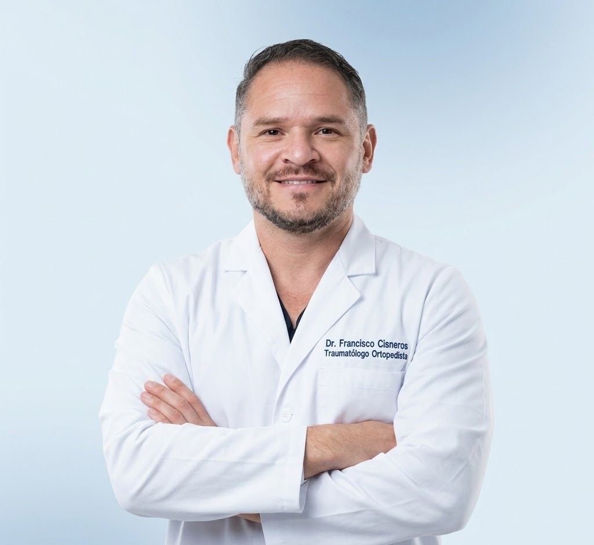
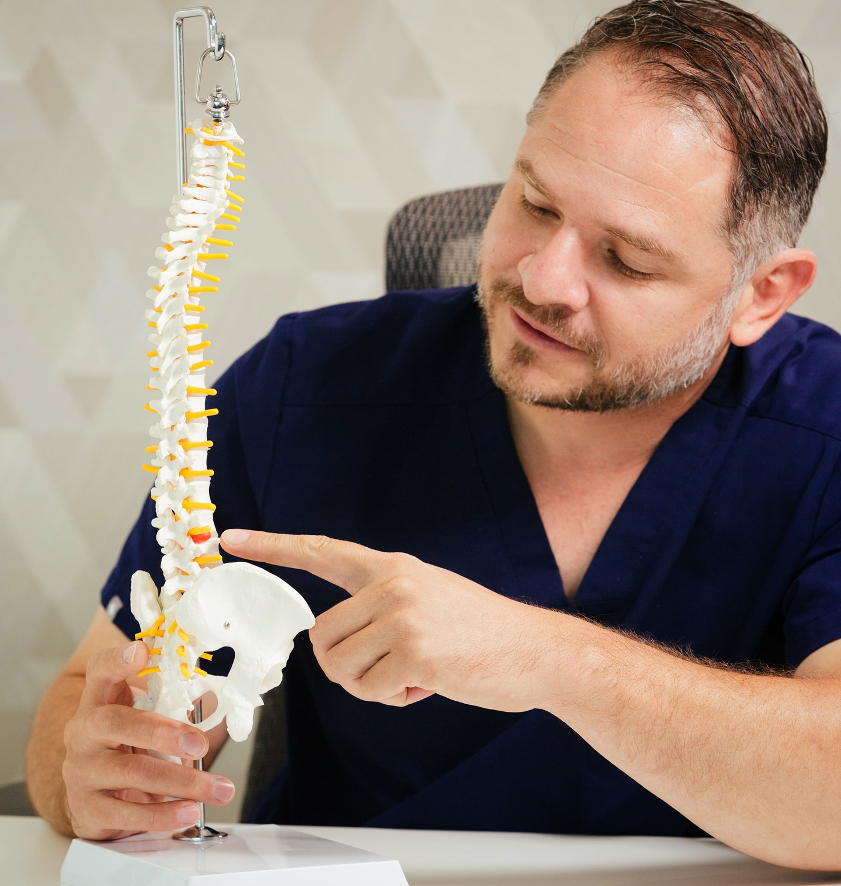

DOLOR DE
COLUMNA
VERTEBRAL
en Guadalajara
Dolor en la columna vertebral en Guadalajara: diagnóstico y tratamiento de hernia discal, ciática, desgaste de columna y más. El 80 % de los pacientes mejora sin cirugía.
Vigente
cirugía
invasión
Reconoce tu Síntoma
¿Sientes alguno de estos síntomas de columna vertebral?
El dolor de columna lumbar, la ciática y la hernia discal son las condiciones más frecuentes que tratamos en Guadalajara. Identifica tu síntoma y encuentra el tratamiento adecuado para tu caso.
Me duele la espalda baja y no cede con reposo
Puede ser una hernia lumbar, contractura crónica o degeneración discal. El diagnóstico temprano evita que avance.
El dolor me baja por la pierna hasta el pie
Esto es ciática: un nervio comprimido. El 80 % mejora sin cirugía con el tratamiento correcto.
Tengo hormigueo o adormecimiento en el brazo
Una hernia cervical puede comprimir raíces nerviosas. Detectarlo a tiempo previene pérdida de fuerza.
Me duele caminar y necesito detenerme a descansar
La estenosis espinal estrecha el canal y comprime los nervios. Tiene tratamiento sin cirugía en la mayoría de casos.
El Proceso
Cómo atendemos el dolor de columna vertebral en Guadalajara
Un camino claro desde el primer síntoma hasta la recuperación. Enfermedades de la espalda como hernia, ciática o desgaste de columna tienen solución. Consulta con cita programada.
Primera consulta
Revisión completa de síntomas y estudios existentes. Primera cita disponible en menos de 48 h.
Diagnóstico preciso
Evaluación neurológica + análisis de imagen (resonancia, rayos X) para identificar la causa exacta del dolor.
Plan personalizado
El 80 % mejora sin cirugía: fisioterapia, bloqueos epidurales o tratamiento conservador a medida.
Seguimiento cercano
Acompañamiento en cada etapa hasta tu recuperación completa, con ajustes al plan según tu evolución.

El Costo de Esperar
¿Qué pasa si postpones el tratamiento de tu columna vertebral?
Sin tratamiento
- El disco se deteriora progresivamente y el daño puede volverse irreversible
- La compresión nerviosa prolongada puede dejar déficit de fuerza o sensibilidad permanente
- Lo que hoy se resuelve sin cirugía puede requerir un procedimiento quirúrgico en el futuro
- La calidad de vida se reduce cada día: trabajo, sueño y movimiento cada vez más limitados
Con atención temprana
- El 80 % de los pacientes mejora con tratamiento conservador, sin necesidad de cirugía
- Diagnóstico correcto desde el primer día = tratamiento más efectivo y duradero
- Recuperación más rápida y completa cuando se actúa antes de que el daño avance
- Primera cita con el Dr. Cisneros en Guadalajara disponible en menos de 48 h